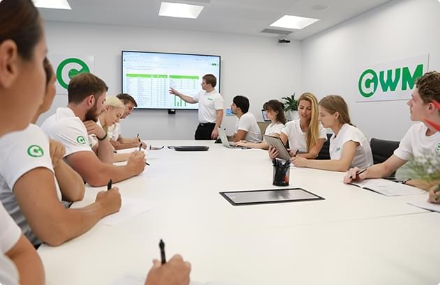
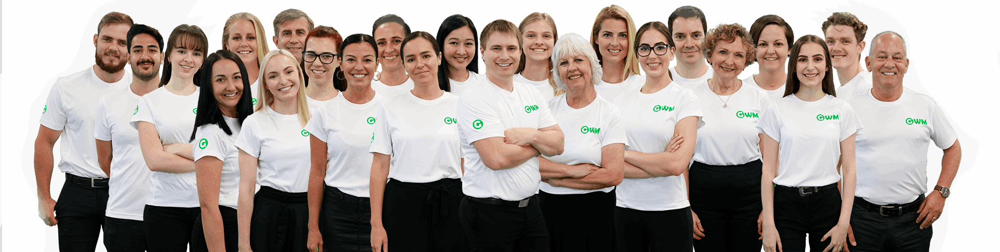
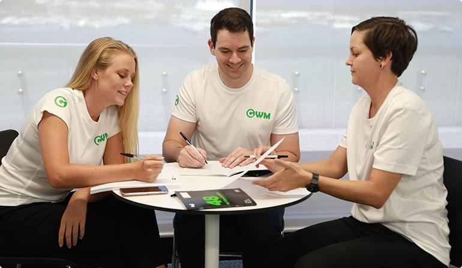
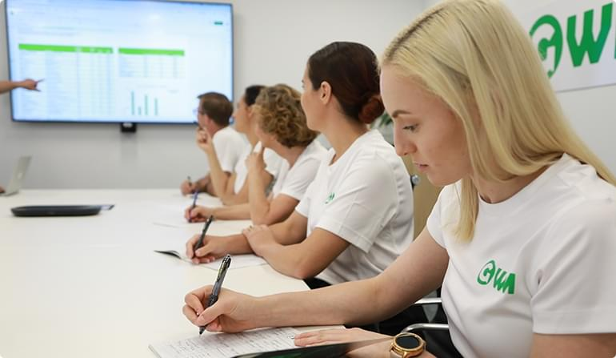
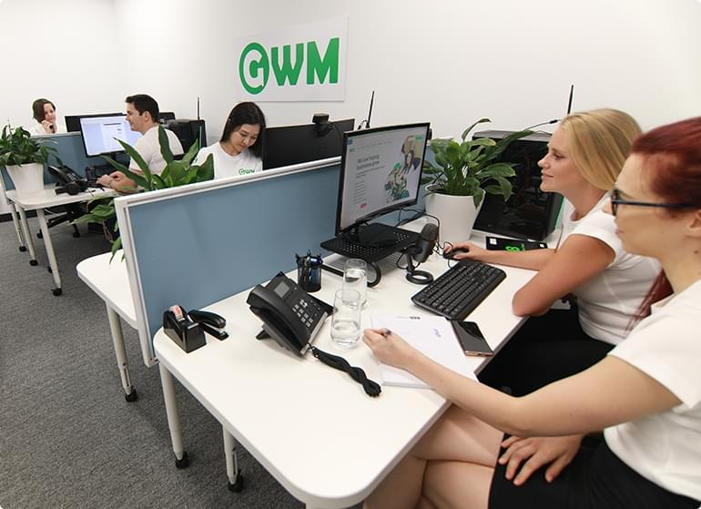

No Lock-in Contracts: We operate on a month to month basis because we believe in providing the best value and service and letting the work speak for itself.
Results Guaranteed: If we do not meet any of our keyword guarantees we will work, for free until we do!
Best SEO Service Guarantee: If you find an Australian company that provides better value in terms of work, content creation and result, we’ll match it and beat it by 10%.
No Minimum Notice Period: You can pause your campaign with us at any time, just send us an email.
No Exit/Cancellation Fees: You will never have to pay any cancellation/exit fee with us.
100% Transparency: Everything we do will be shared directly with you, we refuse to hide anything!
Interactive Real-time Reporting: Our dashboard will keep you up to date with the progress of your campaign, and you will not be wondering what is happening.
GWM INTRO VIDEO
The talented people at GWM Ranked our website on Page 1 of Google for our main keywords such as ‘Corporate Training’ in only two months.
Work with an SEO agency that guarantees the success of its work.

If you are looking for an SEO Agency in Sydney that guarantees the results of its strategies, then GWM is the perfect match! We understand that it’s hard to find a reliable digital marketing company in Sydney that you can trust. A quick search on Google will show there are hundreds of ‘SEO experts’ who promise first page results. With so many so-called ‘experts’ and ‘gurus’ claiming to have all the answers to your SEO success, how do you find an SEO company that will really deliver on what they promise?
At GWM SEO Agency Sydney, we are a specialist search engine optimisation agency working with small and large businesses to improve their online presence through search engine optimisation. If you’re looking for Social Media or Facebook Advertising — then we’re not the agency for you. We are a specialist SEO company with a deep understanding and experience in getting our clients websites on page one of Google.
An important part of delivering the best SEO services in Sydney, is our focus on your ROI and not just the traffic that we can generate for you. We’ll focus our efforts on the search terms that will not only improve your rankings but also your profitability. We look at the keywords and phrases that will increase the visibility and website traffic for your business, and most importantly, generate high-quality leads.
Search engines, such as Google, constantly update their algorithms to improve user experience. Their goal is to rank more relevant results higher and contribute to a better online experience for users. At GWM, our approach to search engine optimization services is also continually being refined and updated. To ensure ongoing success with your SEO campaign, you need to continually evolve and adapt to changes in the industry. There are hundreds of factors that will determine where your website appears on Google, and it never stays the same for long. Our Sydney SEO engineers have a thorough understanding of these ranking factors and how to apply them to our client’s strategies. With such a complicated platform, it is important to partner with the right team of SEO experts, who dedicate themselves to understanding search engine optimization.
WHY BUSINESSES CHOOSE GWM
Work with an SEO agency that guarantees the success of its work.
No Lock-In Contracts
Aliquam non elit lacus. Praesent aliquet, ipsum id scelerisque convallis, mi ligula euismod odio, vel dictum mi risus a mi.
Results Guaranteed
If we do not meet any of our keyword guarantees we will work for free until we do!
No Minimum Notice Period
You can pause your campaign with us at any time, just send us an email.
No Exit/Cancellation Fees
Aliquam non elit lacus. Praesent aliquet, ipsum id scelerisque convallis, mi ligula euismod odio, vel dictum mi risus a mi.
100% Transparency
Everything we do will be shared directly with you; we refuse to hide anything!
Interactive Real-Time Reporting
Vestibulum scelerisque egestas lectus sit amet molestie. Donec consectetur cursus est sed blandit. Nunc sed risus lacus.
Why Partner with GWM SEO Agency Sydney?
We are an SEO Agency in Sydney that is focussed on ROI. All of our strategies are driven by comprehensive competitor research, performance data, combined with years and years of experience developing effective SEO strategies that generate growth. Our expert SEO engineers and content developers know how to generate website traffic that will lead to high quality leads and sales.
We are a passionate team of over 40 Sydney SEO specialists who will work directly with you and your marketing team to develop and implement a SEO strategy to meet your objectives. We’re very hands on and don’t outsource any aspect of our SEO campaigns. We promise you’ll deal directly with one of our dedicated SEO account managers on an ongoing basis. We’ll take the time to understand your business and objectives and use detailed research and analysis to ensure you get a great return on your investment.
By working with GWM SEO Agency Sydney, you’ll work with an in-house team of SEO experts, without the cost needed to employ them in your own marketing team. We don’t lock you into any fixed contracts as we’d rather let our work and results do the talking for us. That said, any effective search engine optimization campaign is an ongoing investment and will typi-cally require a minimum 9-12 months time frame to be effective.

GWM IS MAGIC
BUT DON’T JUST TAKE OUR WORD FOR IT
Ben Kierath chose Green Web marketing for two of his businesses, Hoselink and True Pro-tein. In the video, Ben explains the service he received as well as some extraordinary results.
We use established SEO strategies to attract your target market directly to your website.
Website Analysis
On-Page Optimisation
It is always important to understand what you’re up against. Our aim is to gain an understanding of your competitors and create a way for you to stand out.
Website Analysis
On-Page Optimisation
It is always important to understand what you’re up against. Our aim is to gain an understanding of your competitors and create a way for you to stand out.
Select Keywords
On-Page Optimisation
It is always important to understand what you’re up against. Our aim is to gain an understanding of your competitors and create a way for you to stand out.
Content Creation
On-Page Optimisation
It is always important to understand what you’re up against. Our aim is to gain an understanding of your competitors and create a way for you to stand out.
In-bound Links
On-Page Optimisation
It is always important to understand what you’re up against. Our aim is to gain an understanding of your competitors and create a way for you to stand out.
On-Page Optimisation
On-Page Optimisation
It is always important to understand what you’re up against. Our aim is to gain an understanding of your competitors and create a way for you to stand out.
Quality Content
On-Page Optimisation
It is always important to understand what you’re up against. Our aim is to gain an understanding of your competitors and create a way for you to stand out.
Ongoing Search Engine Optimisation
On-Page Optimisation
It is always important to understand what you’re up against. Our aim is to gain an understanding of your competitors and create a way for you to stand out.
Reporting & Tracking
On-Page Optimisation
It is always important to understand what you’re up against. Our aim is to gain an understanding of your competitors and create a way for you to stand out.
Our Strategy for SEO Sydney
Without strong SEO in Sydney and globally, you’re likely to miss a lot of traffic on your website. Staying on top of your SEO game isn’t easy, though. The rules often change and if you want to keep the success you’ve gained, you need to devote yourself to your SEO fully. As a busy business owner, this is the last thing you need to think of. GWM is the provider of the best SEO services in Sydney and will gladly help you discover or maintain your internet fame. The impressive digital marketing campaign we devise for you will help your business grow, get you closer to your target audience, and help you stay ahead of the competition. By driving highly targeted traffic to your website, we’ll launch you to the top query results in no time. With our SEO Sydney experts, you get the possible return for your investment.
Your local SEO Expert
When you choose to work with our SEO Sydney experts, you choose a personal and devoted approach to business. GWM doesn’t believe in discussing all matters via phone or email. Instead, we’d like to meet with you in person to go over your goals and expectations. This will help us establish a baseline for your marketing campaign and approach creating it exactly how you envisioned. No questions will remain unanswered, as our expert SEO Sydney team will always be at your disposal.
Our ideas and plans for your company are no secret and we’ll be sure to fill you in on every part of the process. You’re included from day one and your voice and ideas will always be heard. If you’re not familiar with digital marketing at all, don’t worry, because our team will be happy to fill you in and explain the importance of each segment of digital marketing.

Experienced Team of Sydney SEO Professionals
When you’ve got a team composed of experienced experts like us, you have nothing to worry about. The theoretical and practical knowledge of our team is evident regardless of the task they’re working on. Of course, this doesn’t mean that our experts have stopped refining their skills and developing further. In a vibrant industry such as digital marketing, our SEO Sydney experts are always looking at new opportunities to expand their knowledge and grow as professionals. At GWM, you have a set of people who have been at the top of the industry for years at your disposal.
Unlike most other SEO Sydney companies, we’re very detail and progress-oriented. That means that our experts keep a close eye on industry and SEO trends, as well as potential new rules Google comes up with. That allows us to keep you at the top of your field regardless of the chaos that may be happening in the digital world.

Diverse Range of Digital Marketing Services
SEO Sydney GWM is one of the top digital marketing agencies in Australia today. We started just like any other local business in Sydney- small. With hard work and diligence, we quickly became the number one digital marketing agency local businesses turn to for help. In the beginning, we only offered local SEO services and targeted high traffic to local business. Today, thanks to our continued hard work, we’re able to provide you with all kinds of digital marketing services. Our SEO services in Sydney are well-known, and you can come to us for anything from link building and content marketing to PPC and off-site marketing. Whatever area you choose to focus on, we’ve got your back. Of course, keep in mind that the most effective digital marketing campaign includes all aspects of digital marketing.
Just because we’re recognized as local SEO Sydney experts doesn’t mean we forgot where we started, though. Each client we’ve worked with has helped us get us where we are today, which is why we never take your work for granted. We’ll always treat you like a dear friend and recognize your individuality as a business.

Our SEO Sydney Growth Plan
So, what are our secrets for appearing on page one of Google? There is no one secret ingredient, SEO is an ongoing process across a multitude of tactics. The starting point is to understand your competition and identify the most valuable keywords that will drive traffic to your website. We have listed the most important components of the strategies that we use for our clients below.
Part 1/4 – On-Site Audit And Optimisation
On-site SEO Audit:
In only two months, our talented team of SEO Sydney experts ranked our website on the first page of Google for our main keywords, one of which was “Corporate training”
Market & Keyword research:
With the help of multiple tools and programs, we can analyse your target market and define your buyer persona. This lets us know who you should target and allows us to focus on the most relevant group of keywords. When we find them, we’ll list the ones that bring the most benefits to your individual pages, as well as your website.
Competitor analysis:
Whether you provide us with a list or we discover who your direct competitors are by ourselves and how they’re performing, we’ll find the best strategy they use and see what’s most effective for them. This will allow us to learn from their mistakes and come up with an even better strategy for you, thus placing you higher in the search query.
Delivery time:
On average, the first step takes us around two weeks. The timeline may change depending on the complexity and size of the project.
Part 2/4 – On-Site Implementation And Optimisation
Technical Website Audit:
When deciding how to rank a website, Google uses over 200 ranking factors. We’ll check through your website thoroughly to find the areas that need improvement. Speed, security, visibility, non-existent pages, technical problems, and content quality are all viable areas we’ll need to take a look at. When we have the final list of things that need improvement figured out, our team of developers will address each issue individually and come up with the best course of action to resolve it.
Optimising High Return Landing Pages:
Optimising the metadata for all the pages of your website is implied, but we’ll also pay a lot of attention to the product and services pages that we think will bring you a high return on investment. Our keyword research process will tell us what to do next. In some cases, we might need to create additional pages for high volume keywords. We’ll propose an appropriate reorganization of your website and its categories to give you higher targeted traffic.
Technical Implementation:
After the audit completion, the issues you had will all be resolved. You’ll have to approve of all the proposed stages before we move on to the final stage of the second step. Of course, we’re talking about implementing the changes. Of course, our work doesn’t end here. We’ll continue tracking the performance and progress of your website even once we re-optimise it. Delivery time: It usually takes us arou
Delivery time:
It usually takes us around two weeks to finish the first step of the process. Of course, the timeline may change depending on the complexity and size of the project.
Part 3/4 – Off-Site Optimisation
On-site SEO Audit:
Our SEO Sydney team will also focus on off-site optimization. Our experts know exactly how to help you get the recognition you deserve in the digital world. All of our off-site marketing activities are carefully planned and promise results.
Link Building:
Increasing the number of quality links referring back to your website is easy for our qualified team of SEO Sydney experts. A backlink analysis will be required to discover the low-quality links you’ll need to disavow. After we’re done separating the good from the bad, we’ll start making the list of linking opportunities to outreach.
Blogging Outreach:
Our SEO Sydney experts are aware of the importance of getting your website featured on influential blogs and sites from your niche. Thanks to our extensive experience, we already have a list of contacts in every industry, thus easily giving you the fast results you’re after.
Delivery time:
It usually takes us around two weeks to finish the first step of the process. Of course, the timeline may change depending on the complexity and size of the project.
Part 4/4 – Continual Reporting
Regular reporting:
Our SEO Sydney experts will report back on their progress on a monthly or two-week basis, depending on your wishes and the specifics of your digital marketing campaign. You’ll be able to see all the milestones achieved to the specific date and will easily be able to compare them to previous time periods.
Real-time input:
Transparency is our #1 policy. Each client gets a dashboard where they can track the progress of their digital marketing campaign in real-time. You can easily check up on the state of your campaign on our user-friendly dashboard anytime you so wish.
Long-term commitment:
Our SEO Sydney office prides itself on building strong relationships with our clients. The campaign might be done, but that doesn’t mean we’re done working together. We’ll still be around to monitor its performance and make sure you’re on the right track. It’s also not uncommon for our clients to come back to us with interest in a different marketing method. We’re always right and ready to comply instantly!
Faq
Are you an Australian based company?
Yes, absolutely. Green Web Marketing (GWM) is 100 percent Australian-owned. Our physical headquarters is in Sydney and we have branch offices in a number of other Australian and international cities. Our staff of technical experts, web designers and developers calls Sydney their home.
Should I be concerned about Black Hat SEO?
To avoid penalties and other repercussions, we use 100 percent ‘White Hat’ SEO techniques to drive business to your website. All of our processes and techniques are above board and transparent to our customers. There is no chance that Google will ban your website due to underhanded SEO practices.v
What is SEO?
Search Engine Optimisation (SEO) is the process of making your website attractive to search engines. This is accomplished by on-page optimisation, creating high quality backlinks and other SEO strategies, techniques and tactics. This marketing is focused on increasing your visibility through the use of organic search results. Effective SEO also encompasses the creation of websites that are easier for search engines to understand. This has the happy effect of creating websites that are easier for human beings to understand as well. Combining ease of use for people with an increased search engine appeal is the goal of good SEO. At Green Web Marketing we are dedicated to fine-tuning that principle to give you the best website possible.
Do I have to sign a contract locking me in with your company for an extended period?
No. Absolutely not. We want you to be comfortable with our process. We create a plan based on what you want for your company, determine how long it takes and set it in motion. We let you know how long it will take to achieve the results you are looking for, but don’t force you to sign a contract holding you to that time frame. If at any point you decide that our service is not what you need you can terminate it.
Our success rate is high enough that we feel comfortable offering our service without a long-term contract.
Why does my website need SEO?
The bulk of traffic on the internet is driven by one of the major search engines like Google or Bing. By appealing to these search engines, websites can generate more hits and visits. Social media sites like Facebook, Reddit and others can generate interest in your product or service, but most users turn to search engines to find authoritative information about their interests. No matter what product you produce or service you provide, the bulk of your page visits will be generated by search engines. Optimizing your website to generate more visits will boost page visits and sales.
Do you guarantee Front Page ranking?
Although the various search engine algorithms have the final say on where your page is ranked, we are confident enough in our process that we do offer a guarantee on our work. We can guarantee that sites built around specific keywords will be listed on the Front Page of Google. GWM SEO Sydney has the trained professionals and knowledge to make that happen.
For detailed information about ROI (Return on Investment) contact us at 1800 170 681.
What kind of time frame does it take to reach the Front Page of Google?
There are so many factors that it is nearly impossible to give a time frame without knowing about your company. For websites that utilise competitive keywords it could take as long as six months or, for less competitive keywords, the time can be considerably less. Generally, getting to the front page will take between three and six months.
How much information will I be given about GWM SEO Sydney’s process?
All of it. Our consultants will keep you up-to-date on the project and your dashboard can be used for real time correlations between efforts and results. In addition to enhancing your current online marketing plan, we will show you how the process works. All of the work we do is transparent to our clients.
Online Reputation Management
A business needs a strong reputation both in its market and online. Positive reviews from your customers will prove that your business provides quality products or services and will encourage members of your target market to come to you. Search Engine Optimisation is a major aspect of any business, and will increase your company’s exposure on the internet. Our Organic SEO services can help increase your company’s website traffic, increase sales, and bring in new customers.
Search Engine Optimisation benefits
Connecting your ideal market with your website when they are searching online is one of the best methods of bringing in new customers. We will improve search rankings for your website to attract visitors. If you run a local business, get more recognition of your name and brand by using a local SEO company. We offer website optimisation for SEO, higher rankings in search engines, and a Facebook presence, which are easy and effective methods to increase exposure for your business.
Online Reputation Management
Our company relies on giving the best service to our customers. We will optimize your website’s infrastructure, create content and establish links to increase your visibility. We create the conditions to maximize your online presence. All of these projects are fully documented and explained prior to implementation to keep your company aware of the full online and offline process.
Specifically, since each company is unique, we custom make a plan for you. Contact us at 1800 170 681 or hello@gwm.com.au for detailed information.
LinkBuilding Services
We offer a wide range of articles designed to improve your company’s web presence through social media, provided by a dedicated team of professionals. We create quality content for your website, blog, and social media platforms.
Manually created links
Our SEO team will NEVER use the so-called “Black Hat” SEO techniques, such as hidden text, cloaking, paid links, or doorway pages.
Independent Class C websites
12 month satisfaction guarantee
Our SEO Campaigns
We offer tailored, full-service campaigns with strategies that are re-evaluated quarterly, in order to produce consistent top rankings with search engines. Contact us to learn more about our 360 degree SEO Sydney Services.
Page one search rankings through latest online marketing techniques
Increased website traffic and far-reaching internet presence
Improved visibility through Google and social media
How much does it cost?
That’s a good question, and the answer is it depends on your business, the plan that we come up with and how much work is involved in the process. Since we believe that each customer is unique, we don’t have a set rate for our services. For a quote, call us at 1800 170 681 and we can work out what you need and how much it will cost.
FYI, we have very competitive pricing.
What are the most important factors for quality SEO?
Although the algorithm that search engines use is constantly evolving, there are five basic elements that generate high returns on web searches. These are:
Clear and concise keywords research and keyword mapping
Proper technical structure, online and offline optimization and the proper use of meta-tags
High quality and original content
Consistently high-quality source links and backlinks leading to or from your website.
A winning SEO strategy designed and implemented based on your needs
There are other factors that will influence your search ranking but these five have remained fairly consistent for the last couple of years.
Search Engine optimisation for your Business
The importance of SEO is one of the fastest-growing facets of business.
The internet continues to be the fastest-growing method of attracting customers.
Other methods, such as direct mail, offer less potential for customers.
Your website is one of the most important aspects of your business, with 24/7 accessibility by visitors. Your website will continue to be one of the most important sources of revenue.
SEO is a money-smart method of reaching customers.
This is a relatively low-cost marketing strategy to establish long-term relationships with customers. Search Engine Optimisation Sydney is a cost-effective alternative to traditional pay-per-click programs.
Can I do my own SEO?
Sure, it’s not rocket science, but – and this is a big but – SEO is complex and is constantly evolving. The rules that made web pages attractive to search engines five years ago don’t have the same effect now. The basic concepts of SEO are simple and are helpful to know whether you are a business manager or web designer. If you are willing to learn the basics and devote time to create and maintain a SEO strategy for your company, then you are well on your way to becoming an SEO professional.
However, depending on the results you want and the complexity of your website, SEO is a process that is best handled by professionals. From assigning keywords to creating content, an established company has an advantage over the most talented amateur.
GWM is more than happy to help you learn SEO. Whether you want to create and manage your SEO on your own or use an experienced agency to aim for the front pages of Google, having a professional and proven company on your side will help your efforts immensely.
Can I choose my own keywords?
Well, sort of. During our consultation we will go over your keywords and help create a set – including long-tailed keywords – that will give you the best results. Choosing the best keywords for your business, now and in the future, is part of our overall strategy to create the highest ROI possible.
What makes SEO Sydney different from other companies?
SEO Sydney revels in the dichotomy of being a local company with a global reach. We understand our customers and their needs, whether they are in Sydney, Vietnam, the United States or Europe. We honed our skills at the local level and carried that hometown feeling with us when we expanded globally.
All of our consultants are highly-trained and qualified professionals that want to make your business succeed. Our success rests on your success.
How do we make sure I get the results we’re looking for?
Our clients come from all across the globe! We are constantly striving to drive strong ROI through content marketing, SEM and SEO.
We know it is tricky to choose the right digital marketing agency for your project. Quality SEO service, content marketing & SEM is about putting a perfectly optimised online marketing strategy into operation. When the right approach is implemented, you stand to foster greater visibility and traffic than ever before.
Why you need to work with our Search Engine Optimisation experts?
We have in-depth knowledge of search engine optimisation for both small and medium size businesses.
Green Web Marketing has powerful in-house tools and strategies in place and stands for business owners and entrepreneurs who are serious about the online growth of their business.
What makes our Search Engine Optimization Services the real deal?
Our SEO agency in Sydney will dedicate themselves and go the extra mile to ensure your success.
Search Engine Optimisation services in Sydney: We use strategies that boosts your online presence in the organic section of Google and other search engines.
The best training – Our local SEO experts are Google certified professionals and the best SEO consultants in Sydney. They are trained by world renowned gurus and they are able to run different in-house training sessions for your teams. At Green Web Marketing we can teach you the skills to skyrocket the visibility for your brand.
Looking for a marketing strategy that generates revenue?
Green Web Marketing will help you with an online marketing strategy that generates revenue for your business. From brand consultation, sales, lead generation to campaign management we can make your brand’s voice consistent across all social media programs delivering the same message in the most valuable way.
Our ambition is to help brands stand out
We tailor unique strategies to suit your business taking into account the personality of your brand. Green Web Marketing understands that having a fan base means more business for you. We optimise your brand to prospective users to get ahead. Let us help you reach millions of people online with our content, Adwords, social media and SEO expertise.
We are Your Leading SEO Consultants in Sydney
Green Web Marketing is your leading SEO agency in Sydney. Contact us now for a free quote. We will help you beat your competition online through our strategic digital marketing. We will manage every part of your online business to deliver high ROI with rapid growth. We take full accountability and keep you up to date with detailed monthly reports so you can track your improvements making sure you are getting a high return on your investment. Call us now and let the best SEO agency in Sydney take care of the rest! When you are ready to compete, we are ready to make you successful.
What type of results I can expect?
We make the process of search engine optimisation as clear to our customers as possible while boosting leads and sales. This undertaking strengthens your brand authority and makes your company a leader in your industry through content marketing. While doing that we are working to save you money that can be better spent on your other business needs. If you are serious about digital marketing and carving your share of a truly unlimited market, GWM is the company you want in your corner. Our staff are professional, trained and equipped to manage your SEO campaign and put you on top.
Helping you is what we do
Although that sounds clichéd, it’s really not. Our success rests on your success. Without successful clients we would be unable to claim our own success.
If you need a new online marketing strategy or just a few tweaks to make you more competitive, we can help.
If you want your brand name to be considered an authority in your industry, we can help.
If you want to expand your marketing campaign into social media, we can help.
When it comes to online marketing, there is nothing we cannot help you achieve.
About GWM SEO
We are one of the main providers of white hat digital marketing in Australia. We have over 40 experts and we service some of the biggest agencies.
We currently rank one of our clients number 1 for the keyword “SEO Sydney” which I’m sure you can appreciate is a very competitive keyword and we are happy to show you how we achieved this.
Could we can have a quick meeting with you so you can see the quality of our dashboard and some of the results we’ve achieved.
If after the presentation you like what you see, you can trial our service one month and see the quality for yourself.


{kind=link}
{kind=link}
{kind=link}
{kind=link}